RISE：从自身训练轨迹外推教师的递归策略蒸馏
- 论文：RISE: Recursive Improvement via Self-Extrapolating Policy Distillation
- 作者：Yang Li、Semih Yavuz、Shafiq Joty；机构：Salesforce AI Research。
- 首次公开：2026-09-04（arXiv v1）；精读日期：2026-09-07。
- 论文入口：arXiv:2609.05295。代码/项目页：本轮未核验到本文独立代码或项目页，不将参考文献链接当作本文代码。
- 证据范围：完整 28 页预印本，以下实验数值均为作者报告，未经独立复现。
1. 背景和问题
RISE 讨论的是大模型后训练里一个相当具体的问题：如果没有比学生更强、又适合当前任务的外部教师，能否利用模型已经走过的训练轨迹，构造下一阶段的逐 token 监督？它没有声称从无信息状态产生知识，也没有脱离可验证奖励；它尝试改变的是同一训练信号进入优化器的形式。先用答案正确与否推动一次参数更新，再把这次更新所隐含的预测变化放大成一个教师分布，最后通过蒸馏让学生吸收该分布。这个闭环让“最近的自己”成为教师构造的原材料，真正的方向判断仍来自外部可验证结果。
为什么只做 RLVR 可能不够？对数学题、代码生成或交互任务，系统往往能在整段答案产生后检查是否成功。然而一条正确解答里也可能夹杂多余推导，一条错误解答里也可能存在有价值的中间步骤。GRPO 等方法把组内归一化的结果奖励转成优势，再将同一条响应的优势应用到很多 token 上。这并不意味着各位置梯度完全一样，因为条件概率和参数导数仍然不同；限制在于奖励提供的直接好坏标签主要停留在序列层面，没有告诉模型“具体哪一个选择应该修改”。序列越长，成功或失败与局部决策之间的因果距离越大，这种信用分配问题越突出。
在策略蒸馏提供了另一种监督密度。教师在学生实际生成的前缀上给出下一个 token 的概率分布，学生不仅能知道采样出的那个词是否受欢迎，还能比较未采样候选的相对概率。问题是，一个强教师在自己的推理路径上表现好，不代表它对学生所有中间前缀都能给出可靠续写。学生可能用了教师不熟悉的解法，甚至已经出现局部错误，此时教师的高置信分布未必反映学生接下来怎样才能修复。作者把这种前缀分布不匹配视作外部教师在 OPD 中的关键限制，因此仅靠换一个更大的教师，并不能自动消除监督噪声。
另一条路线是让学生给自己当老师，同时向教师输入正确答案、成功兄弟响应或环境反馈。这个额外上下文通常被称作特权信息。它避开了外部模型依赖，却引入两个新的条件：模型需要有足够的上下文学习能力，才能将额外信息转成有用的局部判断；教师看到的输入又与学生不同，教师的好预测可能依赖学生部署时根本拿不到的内容。比如知道最终答案后，教师可以强烈偏向答案相关词，但不一定给出从原始题目抵达答案的可迁移推理步骤。于是监督更密并不等于监督更准，某些自蒸馏组合甚至可能拖累普通 RLVR。
RISE 的出发点是：理想教师应当接近学生未来可能学到的更优策略，而训练记录恰好包含了一段实际改善方向。参数平均和模型融合说明，同一训练轨迹上的检查点在一些情况下可以做线性运算。论文进一步引用后训练轨迹低维、近似线性演化的经验研究，并在附录 A.3 对自身轨迹做主成分分析：第一方向解释约 68.2% 变化，三个方向合计约 87%。这个观察支持“小幅顺着已有方向外推值得试验”，但并不支持“神经网络全局线性”或“任何两个模型相减都有效”。曲率仍然存在，外推系数越大、参考检查点越久远，误差越可能被放大。
这里与通常的模型平均存在一个容易忽略的区别。平均是把点拉回已有轨迹之间，常用于降低噪声、提高稳健性；RISE 要跨过当前检查点，预测还未真正训练到的位置。向前延长既可能带来收益，也可能越过合适区域。更关键的是，训练位移并不天然代表正确知识：如果奖励有漏洞，或者某次更新主要学会了投机，外推会把这些行为一起增强。作者因此坚持先用 RLVR 提供具有任务依据的更新，再把外推目标作为蒸馏方向。去掉奖励约束后的失败实验，比“自我改进”这个名称本身更能说明方法的适用边界。
阅读这篇论文时还需要分清三个不同对象：正在被梯度更新的学生、用于计算位移的锚点，以及每轮固定的外推教师。锚点可以是上一轮模型，也可以是多个历史检查点的指数滑动平均。教师则有两种实现：直接构造一套新参数，或只在输出分布上做外推。后者未必对应一套可独立部署的权重，所以不能把两个版本都理解成“训练出一个更大教师再压缩”。论文的递归性来自每轮学生变好后重新生成教师，而不是让同一个静态教师被无限重复学习。
从研究价值看，RISE 将关注点从如何容忍坏教师转到如何构造教师。它与已有蒸馏、任务向量和 RLVR 都有连接，创新主要落在这些组件的特定闭环及其实验验证上。当前证据覆盖 1.7B 到 8B 模型、数学、STEM、代码和两种交互基准，尚不能直接外推到超大模型、开放式偏好奖励或真实线上 Agent。本文值得优先研究的，是“训练轨迹能否作为稠密监督来源”这个可检验问题；应同时看平均精度、解题覆盖率、失败轨迹和真实墙钟时间，避免只看到部分基准上的最高分。
另一个需要澄清的问题是，结果判定器与教师承担不同职责。判定器通常只能检验最终答案是否满足规则，既不需要生成完整正确推理，也未必知道所有可行解法；教师却要在每个前缀给出细粒度候选分布。RISE 没有把判定器升级成过程奖励模型，而是让参数更新间接承载判定结果，再借助网络自身结构生成分布变化。这节省了获取逐步标注的需求，同时保留了间接归因的不确定性。成功响应中共同出现的无关措辞也可能获得概率提升，错误响应中的正确局部步骤也可能被压制，所以稠密信号仍不等于经过人工验证的过程监督。把这种监督来源说清楚，才能合理理解消融实验究竟证明了什么。
2. 方法
2.1 自外推策略蒸馏：原文 3.1
先将一轮 RLVR 前的参数记为锚点，更新后得到带撇号的参数。作者用表示映射统一描述外推，公式 4 为：
符号解释：$\pi_\theta$ 是参数为 $\theta$ 的策略；$\theta_n$ 表示本轮 RLVR 之前的参考点，$\theta'_{n+1}$ 是 RLVR 更新后的点；$\phi$ 指定执行线性运算的空间；$\beta$ 是外推倍率。倍率等于 1 时教师退化到更新后的当前策略，刚开始蒸馏时没有师生差异；大于 1 时才产生继续沿位移前进的目标。这个目标是构造出来的近似，未经过未来奖励验证，不能直接称为真实最优模型。
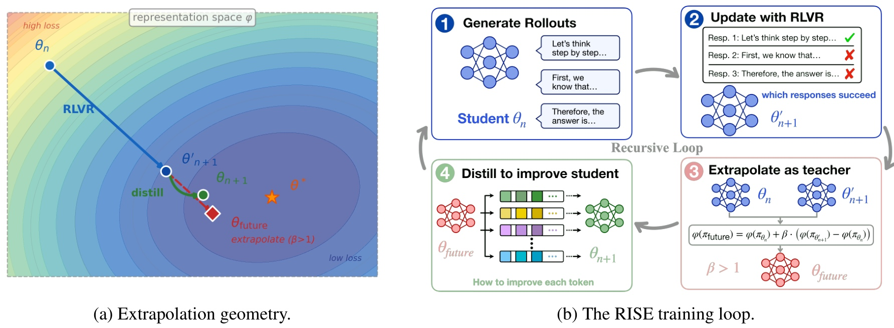
原图左侧将 RLVR 的蓝色位移、外推的红色方向和蒸馏后的绿色学生分开画出。红色目标超出了刚刚完成的更新，但绿色学生没有直接跳到红点，而是通过下一阶段优化吸收目标分布。右侧四个模块依次是采样、根据结果奖励更新、构造教师、蒸馏并返回下一轮。图中的彩色 token 格表示分布级监督，而不是重新给每条响应贴一个正确标签。这个区别解释了为什么直接扩大参数步长无法替代完整 RISE：参数空间的外推只定义了希望学习的方向，实际更新仍然通过当前响应上的概率分布进行。图也提示了教师的更新频率：它在每轮重新构造，但在一轮蒸馏内部固定，防止师生同时移动让目标失去意义。左侧最优点只是几何直觉，论文并不知道真实最优参数的位置，也没有逐轮测量图上的损失地形；不能把示意图读成收敛轨迹的真实可视化。 把表示映射设为参数本身，就得到公式 5 的权重空间版本：
符号解释：$\theta_{\mathrm{future}}$ 是显式物化的教师参数，括号内是此次训练位移。这里所有参数必须在同一模型坐标系中对齐；不是不同架构间的任意参数相加。该版本能通过教师前向得到一套连贯的条件分布，因此不同位置预测由同一网络决定，代价是要处理教师参数和额外前向。教师权重在该轮 OPD 内保持固定，不是学生每更新一次就重新外推一次。 把表示改为同一前缀上的对数概率，就得到公式 6：
符号解释：$s=(x,y_{<t})$ 是题目和已生成前缀；$v$ 是候选 token；$\pi_{\mathrm{post}}$ 表示 RLVR 后策略；$Z(s)$ 为归一化常数。几何混合放大的是新旧概率比：近期变得更可能的候选获得进一步增强，变得不可能的候选受到压制。参数外推是先移动参数再经过非线性网络，而 logit 外推是先计算两个网络输出再做线性操作。只有参数到输出映射严格线性时，两者才完全一致；在真实网络中，logit 版本近似权重版本的一阶行为，省去物化外推模型，但仍需要锚点和更新后模型在响应上的预测。 作者利用反向 KL 给出公式 7 的分解：
符号解释：$p$ 是蒸馏期间正在优化的学生分布；锚点、更新后分布以及 $Z$ 在这次目标构造后固定。负系数项体现离开旧锚点的倾向，正系数项体现靠近已获奖励支持的新检查点的倾向。这是 logit 几何混合配合反向 KL 时的精确代数关系，提供方向与约束的直觉。它不能直接写成实际 JSD 损失也有同样两个 KL 项，更不能据此保证非凸优化中每个小批次都提高最终准确率。
2.2 蒸馏损失设计：原文 3.2
完整词表分布在长响应和大批量下会带来较大存储负担，因此实现保留更新后学生的 top-K 候选，并把其余概率合成一个尾桶。设候选集合为 $S$，压缩后的概率写成：
符号解释：$\widetilde p$ 是 $K+1$ 维分布，tail 汇总未入选 token 的总质量。新旧策略必须投影到同一集合，才能比较对应坐标；随后对包括尾桶在内的对数概率执行外推并重新归一化。这不是把 top-K 概率直接当完整词表，也不是把尾部质量删除后装作零。原文默认 $K=100$，代码任务用 $K=20$，原因是其输出分布更尖锐。尾桶只保存总质量，无法分辨被合并词之间的相对偏好。如果某个尾部词在外推后本应进入高概率候选，固定支持集仍可能掩盖这一变化；因此尾桶解决的是概率质量守恒，不是恢复全部词表信息。先压缩再外推与先在全词表外推再选教师 top-K 不完全相同；作者认为典型分布下偏差很小，但这依赖质量集中，遇到高熵输出仍应重新检查。 原文公式 9 用反向 KL 描述目标：
符号解释：$\operatorname{sg}$ 表示停止梯度，教师仅提供常量目标；求和覆盖响应位置，散度在共同的 $K+1$ 维单纯形上计算。权重版本能够先精确前向得到教师词表分布，再按蒸馏当时学生的 top-K 索引投影；logit 版本则在 OPD 开始前构造缓存。因此两者不仅参数运算不同，候选支持集和前向发生时机也不同。学生反向更新自身参数，教师和锚点不从该蒸馏损失获得梯度。 实际实验把 KL 换成有界的 Jensen–Shannon 散度：
符号解释：$p$、$q$ 分别是学生和固定教师的压缩分布，$m$ 是二者算术平均。自然对数下 JSD 上界为 $\log2$，可以减轻极小教师概率导致的数值不稳定。KL 与 JSD 的最优相等点一致，但梯度形状并不相同。作者称 KL 分析能提供保守的理论理解；严格阅读时仍要把“理论分析用 KL”“实际训练用 JSD”“经验结果支持有效”分开。单向散度不等式本身不能无条件证明小 JSD 意味着小反向 KL，也不能替代对实际优化过程的收敛证明。
2.3 双阶段训练、衰减和锚点：原文 3.3
每轮先从当前策略采样响应，计算可验证奖励并做 GRPO 更新；随后用锚点和更新后检查点生成教师，在同一批响应上执行 OPD。logit 版本先做两次响应前向以缓存教师，OPD 小批次直接读取缓存；weight 版本先物化教师参数，然后在 OPD 内前向教师。两种方式都复用最初响应，因此没有第二批额外生成。但响应来自 RLVR 前模型而非更新后学生，严格说有轻微离策略上下文；分布蒸馏在这些前缀上仍可计算，作者通过重采样对照评估其影响，不能将其解释为完全没有分布漂移。 外推强度随训练向 1 衰减，线性默认写为：
符号解释：$n$ 是当前迭代序号，$N$ 是计划总轮数，$\beta_0$ 为起始外推强度，默认 1.2。初期允许较大的继续前进幅度，后期减小教师与当前策略的距离。这里是预设日程，不是在线检测最优点，若轨迹突然转弯仍可能失效。另一个控制变量是锚点更新：
符号解释：$\eta$ 为锚点跟随速率，$\theta_{n+1}$ 是完成 RLVR 和 OPD 后的新学生。$\eta=1$ 恢复上一轮检查点，较小值平滑多个迭代方向，也增大锚点滞后。Qwen 默认 0.1，OLMo 默认 1，这个差异来自消融结果，并非可通用于所有架构的定律。部署时使用最终学生；额外训练组件不要求在生成阶段伴随运行。训练阶段则仍有额外前向、缓存和梯度计算，节省采样不能等价为没有成本。
3. 实验结果
3.1 数学推理与跨域能力
数学实验以 Qwen3-8B、Qwen3-1.7B 在 DAPOMath 上训练，另用 OLMo3-7B-Instruct-SFT 在 OpenR1-Math-46K 上验证模型族迁移。对照包括 GRPO、GRPO+SDPO、SDAR、RLSD，均未引入外部更强模型。各方法匹配学习率、批量和响应长度等设置，并训练一个 epoch。表格里的平均值是基准准确率平均，不能当成合并题目后的总体正确率，也不能把不同采样次数的基准当相同难度测试。
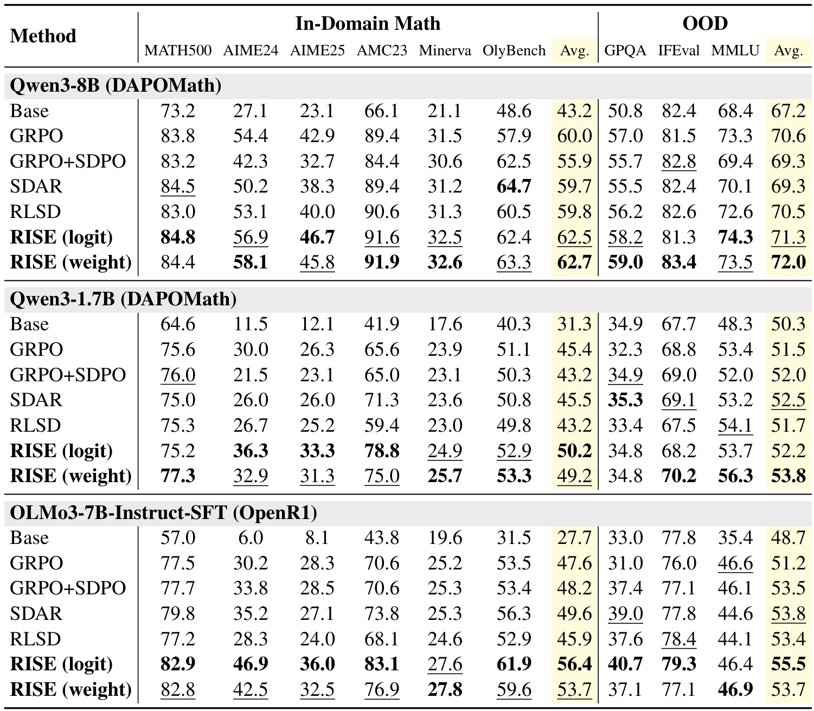
这张完整主表同时保留数学和 OOD 列，避免只截出获胜指标。Qwen3-8B 的数学平均从 GRPO 的 60.0 到 weight 版 62.7，绝对增加 2.7 个百分点；Qwen3-1.7B 的 logit 版从 45.4 到 50.2，增加 4.8 个百分点；OLMo 的 logit 版从 47.6 到 56.4，增加 8.8 个百分点。最显眼的单项是 OLMo AIME24 从 30.2 到 46.9，但不能把这 16.7 点当作所有数学任务的收益。Qwen3-8B 的 OOD 平均从 70.6 到 72.0，OLMo 从 51.2 到 55.5；然而个别单元仍有下降，例如 Qwen3-8B logit 的 IFEval 为 81.3，低于 GRPO 的 81.5。因此准确结论是本组 OOD 平均未受损，并非所有通用能力无损。特权教师方案也不是普遍有益，GRPO+SDPO 在两个 Qwen 设置的数学平均均低于 GRPO，这为改造教师来源提供了实验动机。
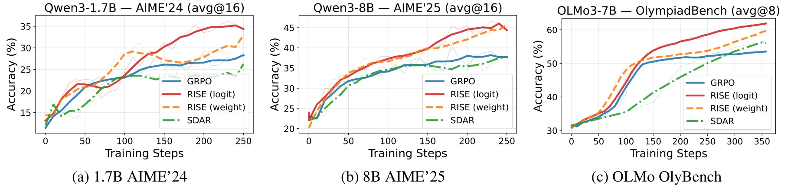
三幅曲线分别跟踪小模型 AIME24、大模型 AIME25 和 OLMo 的 OlympiadBench。横轴是训练步数而非秒数，红色或橙色 RISE 轨迹通常较早进入更高精度区间，而且在中后段保持优势。它补充了终点主表所没有的信息：收益并非只来自最后一个幸运检查点，训练过程较长区间也体现更好的样本利用。不同面板标记 avg@16 或 avg@8，表示按多次采样平均统计，不能和 best-of 多次采样混淆。曲线部分有波动，细线与平滑粗线也不能视作独立种子置信区间。由于 RISE 单步需要额外 OPD，横轴上的领先只直接证明训练步数效率；要判断相同设备、相同时间下是否更优，还必须乘上每步额外耗时并对齐评估时间。论文后面报告的墙钟成本与等梯度预算消融正是对此问题的补充。
3.2 混合领域、代码与多轮任务
混合领域使用 Qwen3-4B-Base，把 STEM 数据和 DAPOMath 组合，关注外推位移同时含有多个任务方向时是否相互冲突。
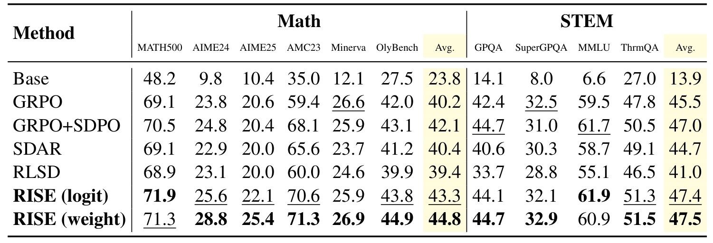
weight 版数学平均为 44.8，相对 GRPO 的 40.2 增加 4.6 点；STEM 平均为 47.5，相对 45.5 增加 2.0 点。logit 版对应为 43.3 和 47.4，说明两个版本在混合训练下都获得平均收益，但收益分配并不相同。比如 logit 版 MATH500 为 71.9，高于 weight 的 71.3；weight 版 AIME24 为 28.8，高于 logit 的 25.6。STEM 中 SuperGPQA 的 logit 结果 32.1 仍略低于 GRPO 的 32.5，所以“多域有效”同样应解读为平均表现而非每项单调提升。表格还显示 GRPO+SDPO 在这组 STEM 数据上更加有竞争力，平均 47.0，提示特权上下文质量与任务有关，不能根据数学单域失败就否定这类方法。RISE 的优势在于本实验无需额外正确解答上下文也达到较高平均水平，而不是证明任何任务都应抛弃特权信息。
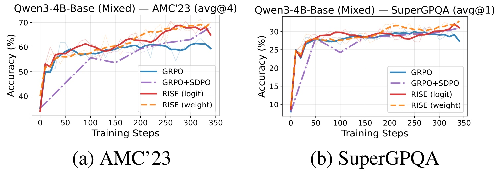
左图的 AMC23 差距在训练中后期更明显：普通 GRPO 提升后回落，而两种 RISE 保持较高水平。右图 SuperGPQA 的提升范围较小，多条曲线在约 30% 附近交错，weight 在部分阶段有优势。两个面板放在一起，有助于理解为什么平均数学收益明显大于 STEM 平均收益：外推可以对不同难度和饱和程度的任务产生不同作用，不能简单乘一个统一增益系数。原文正文描述 AMC23 曲线末端约 70.0，而主表 weight 报 71.3，本笔记以主表作为最终数值、曲线只解释趋势，避免混用平滑图读数与汇总表。对复现来说，应保留每个任务的训练中轨迹，检查是否由一个大任务改善掩盖其他任务退化，也要明确选择最佳检查点还是最后检查点，否则会把模型选择收益混进算法收益。
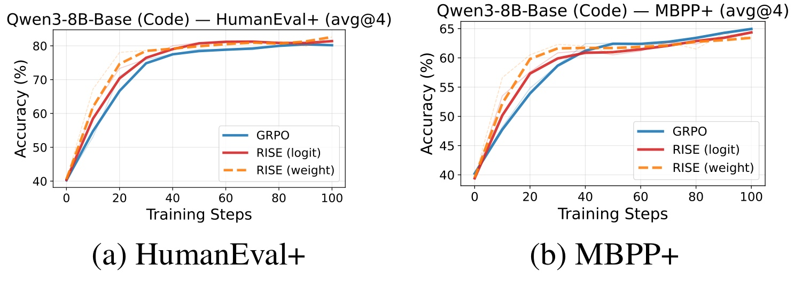
代码实验从 Qwen3-8B-Base 出发，在 Skywork-OR1-Code 上训练。HumanEval+ 里 RISE logit 约在第 50 步达到 GRPO 第 90 步的最终精度附近，支持更早收敛；但到训练末端各条曲线相近，MBPP+ 上普通 GRPO 最后读数甚至略高。因而不宜沿用摘要中“跨所有设置更优”的宽泛说法，把代码部分写成最终精度全面提升。更稳健的判断是：这些较快饱和的代码基准主要提供早期效率证据，最终优势有限。图中 avg@4 是四次采样平均而非四次至少成功一次，附录 C.3 另有 pass@4 及 LiveCodeBench 曲线。若工程目标是尽快达到某个准确率门槛，这类提前达到目标的表现可能有价值；如果训练预算足够且只关心收敛终点，则必须重新衡量多出的蒸馏开销是否值得，不能用训练步数减少比例直接宣称 GPU 时间同比下降。
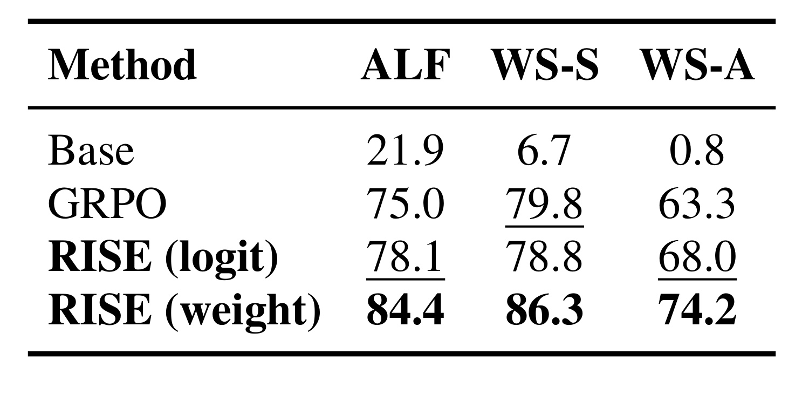
Agent 实验使用 Qwen2.5-3B-Instruct，并沿用 GIGPO 的任务训练设置。weight 版 ALFWorld 成功率为 84.4，对比 GRPO 的 75.0 增加 9.4 点；WebShop 准确率从 63.3 到 74.2，增加 10.9 点；WebShop 分数也从 79.8 到 86.3。表中 WS-S 与 WS-A 分别是分数和准确率，不能混成同一指标。logit 版则呈现更复杂模式：ALFWorld 78.1、WebShop 准确率 68.0 均改善，但 WebShop 分数 78.8 略低于 GRPO 的 79.8。该差异让权重版本的跨位置一致性解释更值得研究，但当前表格没有单独隔离这一因素，不能直接把原因定为一致性。结果证明方法可以应用于延迟稀疏奖励的多轮基准；它没有覆盖真实桌面环境的长期失败恢复，也没有给出线上延迟和安全评估。迁移到真实 Agent 时，应重新验证环境反馈可靠性、行动分布偏移和长轨迹放大错误的问题。
3.3 两个阶段、外推范围与锚点消融
机制分析比继续扩充基准更重要，因为它能排除“只是增大学习率”“只是训练多做一步”等替代解释。
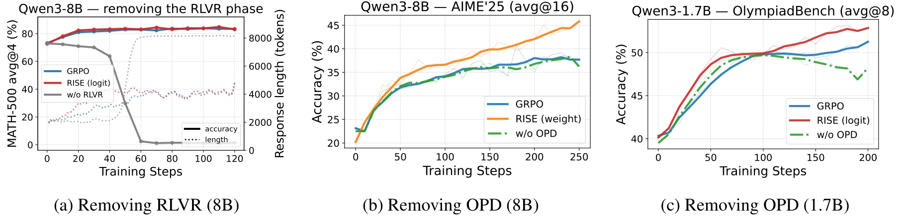
左图去掉 RLVR 后，模型只沿自蒸馏产生的方向反复外推，约 60 步内 MATH500 准确率跌到 2.4%，响应长度从约 2K 激增至 8K 上限。附录 C.3 同时观察训练奖励降到零、策略熵先升再降，符合退化为冗长重复生成的现象。这说明教师目标需要任务奖励持续校准，“来自自身”本身不能保证方向可靠。中、右图删除 OPD，直接采用外推参数，训练没有同样崩溃，但稳定增益基本消失：附录 C.3 的 Qwen3-8B 数学平均仅从 60.0 到 60.3，小模型从 45.4 到 45.6。两项消融分别说明奖励方向和分布蒸馏都重要。它们不能证明 OPD 精确恢复了每个 token 的因果责任，却有力反驳了只需把 RLVR 参数更新放大即可获得同等收益的说法。复现中应保留响应长度、熵和奖励曲线，避免终点评测才发现整段训练已坍塌。
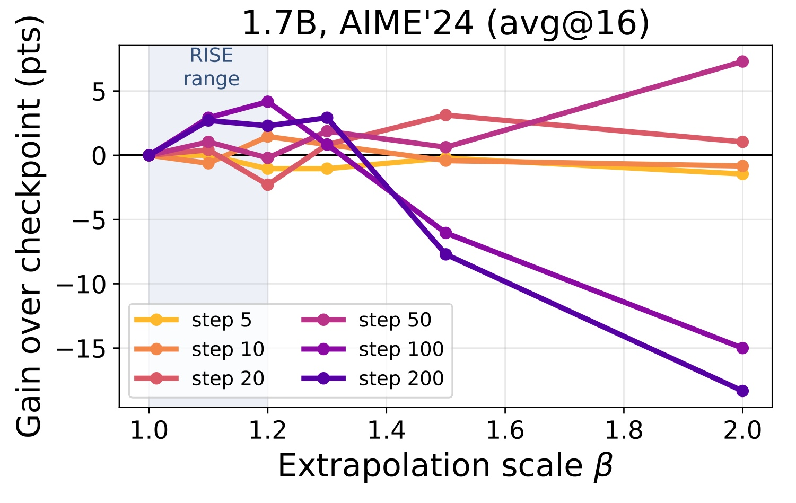
这里固定若干 GRPO 检查点，直接评估不同倍率的参数外推。横轴为倍率，纵轴为相对原检查点的 AIME24 增益。第 50 步使用 2.0 仍可带来约 7.3 点收益；第 100 步同样倍率却下降约 15 点，第 200 步倍率 1.5 已损失约 7.7 点。颜色对应的时间不同，不能把每条曲线看成独立模型规模。阴影标出 RISE 默认 1.0 到 1.2 的保守区间，在这些测试点中相对安全，这为逐步减小倍率提供了直接经验支持。需要注意，这个诊断使用相对 base 的检查点位移，而实际训练还可能采用 EMA 锚点，所以它解释风险趋势，不是对每一轮教师安全性的逐点证明。继续研究时，可以尝试以教师收益、分布距离或验证奖励变化决定是否外推，替代固定日程；但论文当前没有给出成熟的自动可靠性检测器。
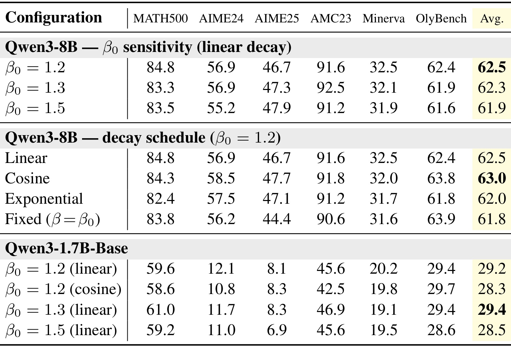
本表提供主文 Table 4 的逐基准展开，因此取代重复的紧凑表截图。Qwen3-8B 在起始倍率 1.2、1.3、1.5 下的数学平均分别是 62.5、62.3、61.9，表明保守配置略占优；固定 1.2 为 61.8，线性衰减为 62.5，余弦为 63.0，指数为 62.0。这组结果支持衰减有用，但不足以证明余弦在所有模型上最佳。底部 Qwen3-1.7B-Base 的最优配置反而是 1.3 线性衰减，平均 29.4；1.2 余弦为 28.3。原文还报告初始 2.0 的预实验发散，未在本表给出完整曲线和重复试验，因此只能作为作者报告的失败观察。调参时不应在单表里选一个全局最优值，而应把幅度、锚点滞后和训练阶段一起考虑：锚点离当前模型越远，同样的倍率对应的实际外推距离越大，两个超参数并不是完全独立的。
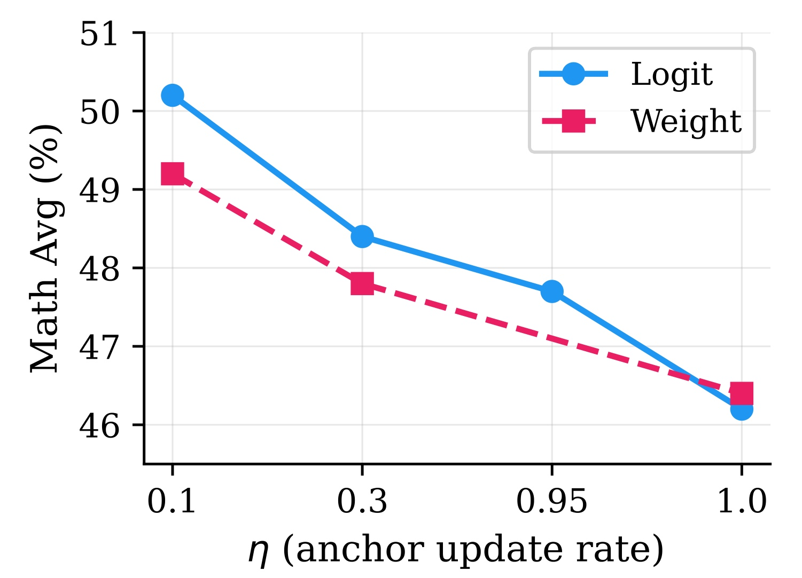
横轴是锚点跟随率，越小表示更慢跟随、对历史方向做更强平滑。logit 版本从不平滑的 1.0 对应 46.2，提高到 0.3 对应 48.4，再到 0.1 对应 50.2；weight 版本从 46.4 到 49.2，也有相同方向的收益。这支持在该 Qwen 设置下平滑能减弱每次奖励更新的噪声，但不能推导“越小越好”到未测试范围。附录 C.8 对 OLMo 给出反例：logit 使用上一检查点为 56.4，而 EMA 0.1 降到 50.1，差 6.3 点。作者推测其逐步方向已经较大且稳定，多余滞后反而有害；这是解释性假设，缺少把方向噪声与性能直接对应的因果实验。因而 Qwen 与 OLMo 使用不同默认值具有数据依据，却也提示 RISE 有模型相关的工程适配成本。应将锚点选择视为需要小规模搜索和监控的配置，而非不增加任何调参负担的默认插件。
3.4 预算、复现性与证据边界
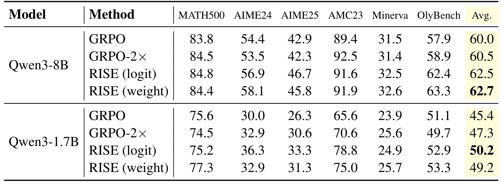
GRPO-2× 在同一批响应上再做一次内循环梯度更新，从而匹配 RISE 的两阶段梯度预算。小模型数学平均从普通 GRPO 的 45.4 提高到 47.3，但仍低于 RISE logit 的 50.2，相差 2.9 点；8B 从 60.0 到 60.5，仍低于 weight 的 62.7，相差 2.2 点。这个对照有效削弱了“收益完全来自更多优化步骤”的解释，却没有匹配所有实现成本：教师前向、参数物化、缓存搬运等仍不同。因此该表应称等梯度预算比较，而不是严格等墙钟或等能耗比较。论文实测 RISE 每轮相对 GRPO 的墙钟时间约为 1.7B 上 1.3 倍、8B 上 1.6 倍，额外成本主要来自 OPD 和锚点前向。两个阶段共享采样，所以没有额外生成响应，但不等于免费训练。工程评估应同时记录达到固定准确率所需时间，以及固定时间内的最佳准确率，才能判断不同硬件和生成占比下是否净获益。
评估协议还有两点影响可比性：附录 B.2 明确全部 Qwen3 关闭 thinking，采样温度为 1.0、top-p 为 1.0，不能与额外开启长推理预算的结果直接横比。pass@N 通过从每题已有 N 条响应有放回抽取 N 条、重复 1000 次 bootstrap 估计，并非另外真实生成 1000 组响应；覆盖率证据应连同这个估计协议理解。附录 B.3 的特权教师仅在采样组出现正确解时启用，在 Qwen3-8B 和 1.7B 上分别覆盖约 85% 和 70% 提示，RISE 则不要求该题组内出现正确样例。覆盖面和教师质量是两个相关但不同的变量，不能只用覆盖率解释全部差异。
复用响应的对照也值得保留：Qwen3-8B 从 RLVR 后重新采样给 OPD，数学平均仍是 62.5，与复用完全相同；1.7B-Base 重采样为 28.4，略低于复用的 29.2。这个结果支持当前短间隔更新中沿用旧响应的实用性，不能证明任意离策略程度都无害。若每轮 RLVR 做更多内循环、学习率更大，或 Agent 轨迹更长，旧前缀分布与新策略可能差得更远，需要重新做这一对照。
附录 C.10 报告三随机种子结果：Qwen3-8B 的 weight 数学平均为 62.4±0.2，对比 GRPO 的 60.1±0.2；Qwen3-1.7B 的 logit 为 49.6±0.4，对比 45.1±0.4。多种子均值与主表单次代表结果略有不同，两者不能混写成一组实验。差值明显大于这里观察到的种子波动，提升具有一定重复性；但三种子不是广泛独立复现，也不能为所有 Agent 或代码指标提供相同置信度。附录还比较 avg@16 和 pass@16，小模型 AIME24 的 pass@16 相对 GRPO 增加 9.6 点，而 avg@16 增加 6.3 点，说明至少在该设置下没有只把概率集中到已经能解的少数题目。
证据存在三方面限制。首先，所有数值来自作者的预印本实验，本轮未核验到独立实现与公开复现实验。其次，低维轨迹是假设的经验基础，训练目标变化、奖励投机或模型结构变化都可能破坏外推有效性。最后，理论的反向 KL 分解与实际 JSD 优化之间仍有论证距离，不能将有限基准上的稳健表现升级为一般收敛保证。本文保留全部主文图、主结果表和详细消融/预算表；附录中的重复曲线及逐项表格在审计中列明省略，重要反例和多种子数据则在正文保留，便于回到原文核验。
4. 总结
RISE 的核心贡献是利用自身后训练轨迹构造不断刷新的教师，把结果奖励诱导的参数变化转成逐 token 分布监督。其逻辑链条相对完整：结果奖励先给方向，权重或 logit 外推放大近期变化，停止梯度的教师提供稠密目标，蒸馏把目标投射回学生，再进入下一轮。实验说明两个阶段缺一不可，也说明外推强度和锚点不是可忽略的实现细节。相对于“自我进化”的宽泛叙述，这些可以被消融、被复现、也可能失败的技术条件更有长期研究价值。
本文最值得记住的正向证据有三组。第一，三类数学配置上的平均准确率均改善，而且 OOD 平均未出现明显牺牲，表明收益并非只来自单一竞赛题集。第二，去掉 RLVR 会出现长度失控和准确率崩溃，而直接采用外推权重又得不到同等提升，这让训练闭环的必要性更可信。第三，等梯度预算和多种子对照削弱了额外优化次数与随机波动两种常见解释。与之对应，代码任务更主要体现早期收敛优势；Agent 的 weight 版本优势强于 logit，但不能仅凭结果表认定是哪一项结构差异导致。
复现应从一个现有可稳定训练的 RLVR 设置开始，先冻结数据、奖励检查器和评估脚本，建立普通 GRPO、双梯度 GRPO、两种 RISE 的对照。记录完整训练成本，而不是只记采样数；记录实际 teacher/student 距离、响应长度、熵和无效回答率，而不是只看平均奖励。保留上一检查点与 EMA 两种锚点的小范围实验，并对高熵位置检查 top-K 覆盖质量。当奖励曲线与真实评测分离时，应先怀疑奖励方向本身是否可靠，再讨论扩大外推倍率。这个顺序来自论文失败实验的启示，不是作者已经提供的自动故障处理功能。
对推荐和搜索背景的读者，迁移兴趣可以落在带可验证目标的生成式推荐或检索 Agent 后训练，但目前不能把数学准确率收益直接换成 CTR、GMV 或用户满意度提升。在线反馈包含选择偏差、延迟和噪声，放大位移可能同时放大短期目标偏好；与论文中的答案判定存在本质差异。更合理的研究问题是：在固定离线任务和经过检验的奖励下，轨迹外推能否改善生成候选、工具使用或约束满足，再以真实业务指标验证。需要新的实验支持，不能借用本文数字完成推断。
后续优先关注三个方向：是否出现可运行的官方代码及复现，是否能用数据驱动指标自适应判定外推安全区间，以及在严格相同墙钟预算下能否稳定优于加强版 RLVR。当前论文已给出一个有说服力的教师构造候选方案，但它仍依赖可信奖励、局部有效的训练轨迹和适当的计算预算。把这三个条件保留下来，才能理解它为什么在报告设置中奏效，也能判断换到自己的任务时哪些部分必须重新验证。